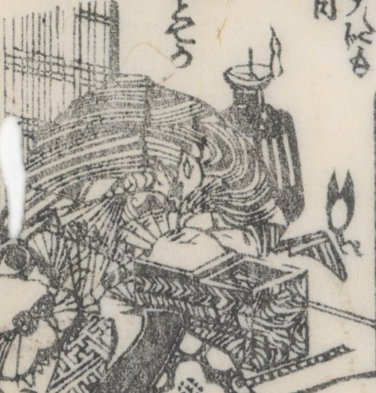

絹；キヌ，和鋏；ワバサミ，裁縫箱；サイホウバコ，燭台；ショクダイ

屏風に描かれた化物。絹狸に似ている。波模様の着物。裁縫箱と和鋏がある。顔を扇で覆っている。燭台。
著作者：一陽齋豊國ほか／出典：親書誌：U426_nichibunken_0444：庭訓武藏鐙／日付：2017／資源識別子：U426_nichibunken_0444_0015_0001
Copyright (c)2010- International Research Center for Japanese Studies, Kyoto, Japan. All rights reserved.